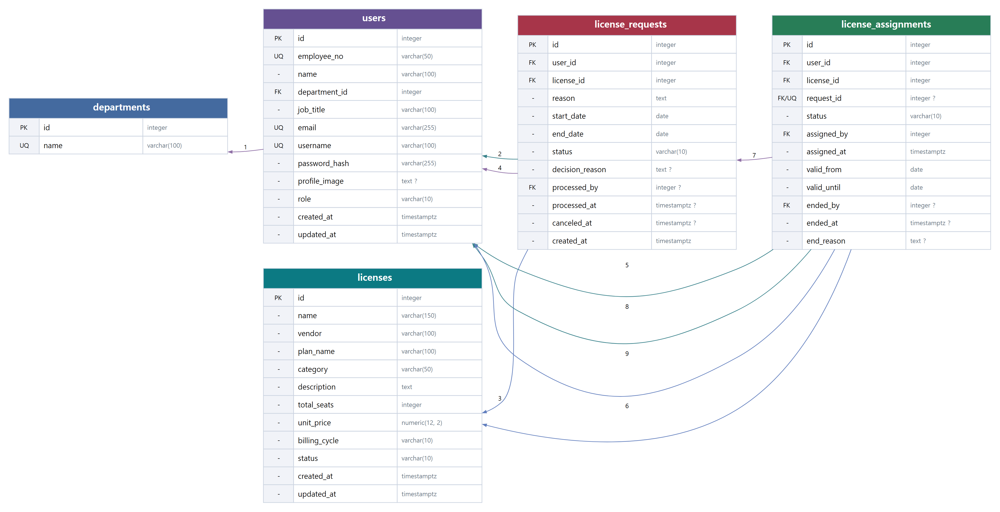

5개 테이블 · 9개 FK. 화살표는 참조 테이블을 가리킨다. 연결 숫자는 다음 페이지 관계 정의와 대응한다. ?는 nullable.
| 부모 PK | 카디널리티 | 자식 FK | 규칙 및 참조 무결성 |
|---|---|---|---|
| 1 · departments.id | 1 : N | users.department_id | 필수 FK. 소속 부서 ID; 참조 departments.id |
| 2 · users.id | 1 : N | license_requests.user_id | 필수 FK. 대상 직원 users.id; 참조 users.id |
| 3 · licenses.id | 1 : N | license_requests.license_id | 필수 FK. 대상 라이선스 licenses.id; 참조 licenses.id |
| 4 · users.id | 1 : N | license_requests.processed_by | 선택 FK. 처리자 users.id. 처리 전 null; 참조 users.id |
| 5 · users.id | 1 : N | license_assignments.user_id | 필수 FK. 대상 직원 users.id; 참조 users.id |
| 6 · licenses.id | 1 : N | license_assignments.license_id | 필수 FK. 대상 라이선스 licenses.id; 참조 licenses.id |
| 7 · license_requests.id | 1 : 0..1 | license_assignments.request_id | 선택 FK. 원본 신청 license_requests.id. UNIQUE, 직접 배정 이력은 null 가능; 참조 license_requests.id |
| 8 · users.id | 1 : N | license_assignments.assigned_by | 필수 FK. 할당 처리자 users.id; 참조 users.id |
| 9 · users.id | 1 : N | license_assignments.ended_by | 선택 FK. 반납 / 회수 수행자 users.id; 참조 users.id |
사용자와 라이선스의 다대다 관계를 신청 및 할당 테이블로 해소한다. 신청은 업무 요청 이력, 할당은 실제 점유 상태로 분리한다. 1개 신청은 최대 1개 할당에 연결되고, 직접 배정 시연 이력 등을 위해 request_id는 nullable이다. 직접 배정용 API는 제공하지 않는다.
처리자·승인자·종료자도 users를 참조한다. 외래키에 CASCADE 삭제를 설정하지 않았으며, 신청·할당은 삭제 대신 상태 전이로 보존한다.
부서명을 분리하여 사용자별 반복 문자열을 방지한다.
| Key | 컬럼명 | 데이터 타입 | Nullable | 기본값 | 컬럼 설명 및 비즈니스 규칙 |
|---|---|---|---|---|---|
| PK | id | INTEGER | NO | 자동 증가 | 고유 식별자 |
| UQ | name | VARCHAR(100) | NO | 없음 (필수 입력) | 이름 / 명칭 |
PRIMARY KEY(id), UNIQUE(name)
조건부 UNIQUE는 PostgreSQL 부분 인덱스로 적용하며 DBML Note에 함께 기재한다. 앱 기본값은 DB DEFAULT와 구분한다.
USER와 MASTER를 동일 테이블의 role로 구분한다. 부서 FK, 사번·아이디·이메일 중복 방지.
| Key | 컬럼명 | 데이터 타입 | Nullable | 기본값 | 컬럼 설명 및 비즈니스 규칙 |
|---|---|---|---|---|---|
| PK | id | INTEGER | NO | 자동 증가 | 고유 식별자 |
| UQ | employee_no | VARCHAR(50) | NO | 없음 (필수 입력) | 사번. 중복 불가 |
| - | name | VARCHAR(100) | NO | 없음 (필수 입력) | 이름 / 명칭 |
| FK | department_id | INTEGER | NO | 없음 (필수 입력) | 소속 부서 ID; 참조 departments.id |
| - | job_title | VARCHAR(100) | NO | 없음 (필수 입력) | 직급 / 직책 |
| UQ | VARCHAR(255) | NO | 없음 (필수 입력) | 회사 이메일. 소문자 정규화, 중복 불가 | |
| UQ | username | VARCHAR(100) | NO | 없음 (필수 입력) | 로그인 아이디. 중복 불가 |
| - | password_hash | VARCHAR(255) | NO | 없음 (필수 입력) | bcrypt 해시. 평문 저장 및 사용자 응답 노출 금지 (REQ-NFN-001) |
| - | profile_image | TEXT | YES | NULL | 선택 프로필 Data URL (JPEG/PNG/WEBP). null은 기본 프로필. 별도 용량 제한 없음 |
| - | role | VARCHAR(10) | NO | USER (앱) | USER(임직원) / MASTER(관리자). 가입 시 USER 고정 |
| - | created_at | TIMESTAMPTZ | NO | 애플리케이션 UTC now() | 생성 시각(UTC) |
| - | updated_at | TIMESTAMPTZ | NO | 애플리케이션 UTC now() | 최종 수정 시각(UTC); 수정 시 앱에서 UTC now() 갱신 |
role IN ('USER','MASTER')
조건부 UNIQUE는 PostgreSQL 부분 인덱스로 적용하며 DBML Note에 함께 기재한다. 앱 기본값은 DB DEFAULT와 구분한다.
좌석과 구독 정보를 저장한다. used_seats는 저장하지 않으며 ACTIVE 할당으로 계산한다.
| Key | 컬럼명 | 데이터 타입 | Nullable | 기본값 | 컬럼 설명 및 비즈니스 규칙 |
|---|---|---|---|---|---|
| PK | id | INTEGER | NO | 자동 증가 | 고유 식별자 |
| - | name | VARCHAR(150) | NO | 없음 (필수 입력) | 이름 / 명칭 |
| - | vendor | VARCHAR(100) | NO | 없음 (필수 입력) | 공급사 |
| - | plan_name | VARCHAR(100) | NO | 없음 (필수 입력) | 구독 플랜 |
| - | category | VARCHAR(50) | NO | 없음 (필수 입력) | 분류(개발 / 디자인 / 생산성 등) |
| - | description | TEXT | NO | 없음 (필수 입력) | 라이선스 설명 |
| - | total_seats | INTEGER | NO | 없음 (필수 입력) | 전체 좌석 수. 현재 ACTIVE 사용량 미만으로 축소 불가 |
| - | unit_price | NUMERIC(12, 2) | NO | 없음 (필수 입력) | 사용자당 USD 단가. 소수 둘째 자리까지, 총 12자리 |
| - | billing_cycle | VARCHAR(10) | NO | 없음 (필수 입력) | MONTHLY(월간) / YEARLY(연간) |
| - | status | VARCHAR(10) | NO | ACTIVE (앱) | ACTIVE / INACTIVE. 비활성화는 기존 할당을 종료하지 않음 |
| - | created_at | TIMESTAMPTZ | NO | 애플리케이션 UTC now() | 생성 시각(UTC) |
| - | updated_at | TIMESTAMPTZ | NO | 애플리케이션 UTC now() | 최종 수정 시각(UTC); 수정 시 앱에서 UTC now() 갱신 |
billing_cycle IN ('MONTHLY','YEARLY'); status IN ('ACTIVE','INACTIVE'); total_seats >= 0; unit_price >= 0
조건부 UNIQUE는 PostgreSQL 부분 인덱스로 적용하며 DBML Note에 함께 기재한다. 앱 기본값은 DB DEFAULT와 구분한다.
신청 목적·예정 기간과 승인·반려·취소 결과를 보존한다. 삭제하지 않는다.
| Key | 컬럼명 | 데이터 타입 | Nullable | 기본값 | 컬럼 설명 및 비즈니스 규칙 |
|---|---|---|---|---|---|
| PK | id | INTEGER | NO | 자동 증가 | 고유 식별자 |
| FK | user_id | INTEGER | NO | 없음 (필수 입력) | 대상 직원 users.id; 참조 users.id |
| FK | license_id | INTEGER | NO | 없음 (필수 입력) | 대상 라이선스 licenses.id; 참조 licenses.id |
| - | reason | TEXT | NO | 없음 (필수 입력) | 사용 목적 또는 처리 사유. 입력은 공백 제거 후 1~4000자 |
| - | start_date | DATE | NO | 없음 (필수 입력) | 사용 시작 예정일 |
| - | end_date | DATE | NO | 없음 (필수 입력) | 사용 종료 예정일. start_date 이상 |
| - | status | VARCHAR(10) | NO | PENDING (앱) | PENDING → APPROVED / REJECTED / CANCELED |
| - | decision_reason | TEXT | YES | NULL | 승인 / 반려 사유. 처리 전 null |
| FK | processed_by | INTEGER | YES | NULL | 처리자 users.id. 처리 전 null; 참조 users.id |
| - | processed_at | TIMESTAMPTZ | YES | NULL | 승인 / 반려 처리 시각(UTC) |
| - | canceled_at | TIMESTAMPTZ | YES | NULL | 사용자 취소 시각(UTC) |
| - | created_at | TIMESTAMPTZ | NO | 애플리케이션 UTC now() | 생성 시각(UTC) |
start_date <= end_date; status IN ('PENDING','APPROVED','REJECTED','CANCELED')
uq_pending_user_license: UNIQUE (user_id, license_id) WHERE status = 'PENDING'
조건부 UNIQUE는 PostgreSQL 부분 인덱스로 적용하며 DBML Note에 함께 기재한다. 앱 기본값은 DB DEFAULT와 구분한다.
승인 시 생성한다. ACTIVE만 좌석 점유로 집계하며 반납·회수 시 행을 남긴다.
| Key | 컬럼명 | 데이터 타입 | Nullable | 기본값 | 컬럼 설명 및 비즈니스 규칙 |
|---|---|---|---|---|---|
| PK | id | INTEGER | NO | 자동 증가 | 고유 식별자 |
| FK | user_id | INTEGER | NO | 없음 (필수 입력) | 대상 직원 users.id; 참조 users.id |
| FK | license_id | INTEGER | NO | 없음 (필수 입력) | 대상 라이선스 licenses.id; 참조 licenses.id |
| FK / UQ | request_id | INTEGER | YES | NULL | 원본 신청 license_requests.id. UNIQUE, 직접 배정 이력은 null 가능; 참조 license_requests.id |
| - | status | VARCHAR(10) | NO | ACTIVE (앱) | ACTIVE → RETURNED / REVOKED |
| FK | assigned_by | INTEGER | NO | 없음 (필수 입력) | 할당 처리자 users.id; 참조 users.id |
| - | assigned_at | TIMESTAMPTZ | NO | 애플리케이션 UTC now() | 할당 시각(UTC) |
| - | valid_from | DATE | NO | 없음 (필수 입력) | 권한 승인 시작일. 승인 시 신청 시작일 복사 |
| - | valid_until | DATE | NO | 없음 (필수 입력) | 권한 승인 종료일. 자동 회수 트리거 아님 |
| FK | ended_by | INTEGER | YES | NULL | 반납 / 회수 수행자 users.id; 참조 users.id |
| - | ended_at | TIMESTAMPTZ | YES | NULL | 반납 / 회수 시각(UTC) |
| - | end_reason | TEXT | YES | NULL | 종료 사유. 직접 반납은 사용자 직접 반납 |
status IN ('ACTIVE','RETURNED','REVOKED'); valid_from <= valid_until
uq_active_user_license: UNIQUE (user_id, license_id) WHERE status = 'ACTIVE'
조건부 UNIQUE는 PostgreSQL 부분 인덱스로 적용하며 DBML Note에 함께 기재한다. 앱 기본값은 DB DEFAULT와 구분한다.
| 대상 | 허용 전이 | 처리 규칙 |
|---|---|---|
| 신청 | PENDING → APPROVED | MASTER 승인 + ACTIVE 할당 생성. 같은 트랜잭션. 기존 할당 또는 잔여 0석이면 409. |
| 신청 | PENDING → REJECTED | MASTER 반려. 사유·처리자·시각 저장. 할당 없음. |
| 신청 | PENDING → CANCELED | 본인 취소. canceled_at 저장. 타인 건은 403. |
| 할당 | ACTIVE → RETURNED / REVOKED | 반납 / 회수자·시각·사유 기록. 종료된 건의 재처리는 400. |
| 라이선스 | ACTIVE ↔ INACTIVE | 비활성화는 신규 신청·승인을 차단. 기존 할당을 자동 종료하지 않음. |
| UI 필드 | DB 또는 계산식 | 화면 |
|---|---|---|
| 부서 / 직원 정보 | users.department_id → departments.id; users.name/job_title/email/profile_image | SCR-COMMON-001, 002 / SCR-ADM-006 |
| 사용 / 잔여 / 사용률 | COUNT(ACTIVE assignment); total_seats - COUNT; COUNT / total_seats × 100 | SCR-LIC-001 / SCR-ADM-001, 003 |
| 승인 / 반려 결과 | license_requests.status/decision_reason/processed_by/processed_at | SCR-REQ-001 / SCR-ADM-004 |
| 권한 승인 기간 / 목적 | license_assignments.valid_from/valid_until; request_id → license_requests.reason | SCR-MYLIC-001 / SCR-ADM-006, 010 |
| 월 환산 단가 | MONTHLY: unit_price / YEARLY: unit_price ÷ 12 | SCR-LIC-001 / SCR-ADM-003 |
신청 승인·반납·회수·좌석 변경 시 licenses 행을 먼저 잠그고 상태를 재검증한다. 사용량 집계의 단일 기준은 ACTIVE 할당이다. 비활성 라이선스도 대시보드 전체 좌석 합계에 포함한다. 승인 기간은 표시·관리 정보이며 종료일 자동 회수 또는 예약 시작일 지연 할당은 구현 범위가 아니다.